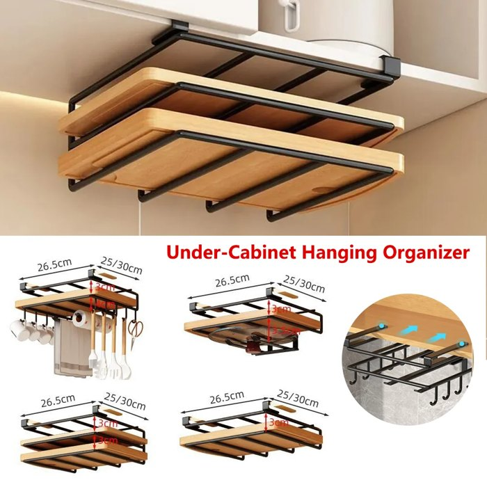

NICHT FREIGEGEBENER PRODUKTENTWURF
Keine eBay-Veröffentlichung. Fehlende Dokumente und Prüfpunkte bleiben offen. Versand und Gewinn sind nur Kalkulationswerte, keine Checkout-/Gewinnbestätigung.
AliExpress: 1005009723070135

Robustes Material Dieses Regal ist aus robusten Materialien gefertigt und gewährleistet eine lange Lebensdauer, da es den Anforderungen des täglichen Gebrauchs in der Küche standhält. Einfache Installation Das Regal lässt sich einfach installieren und benötigt weder spezielle Werkzeuge noch besondere Fähigkeiten, was es zu einer praktischen Ergänzung für jede Küche macht. Multifunktional Dieses Regal erfüllt mehrere Funktionen und dient als Halter für Schneidebretter, Topfdeckel, Papiertücher und vieles mehr. Platzsparendes Design Dank seines platzsparenden Designs nutzt dieses Regal den unter dem Schrank befindlichen Raum effizient aus und maximiert so die Stauraumkapazität Ihrer Küche.
| Ursprung | CN (Herkunft) |
|---|---|
| Funktion | Wiederverwendbar |
| Abteilung | Unisex-Erwachsene |
| Material | STAHL |
| Merkmal | Andere |
| wenn mit Schubladen | n |
| Choice | yes |
| SKU | Quelloptionen | Bestand | Quellpreis EUR | Versandprognose EUR | Verkaufspreisprognose EUR |
|---|---|---|---|---|---|
| 12000049977736151 | {"Farbe": "Danceng"} | 1 | 19.89 | 1.99 | 48.99 |
| 12000058195295763 | {"Farbe": "Silvery"} | 9 | 27.19 | 1.99 | 63.99 |
| 12000049977736156 | {"Farbe": "Shuangpaigou Weiß"} | 4 | 6.29 | 1.99 | 27.99 |
| 12000049977736152 | {"Farbe": "Shuangceng A"} | 20 | 23.39 | 1.99 | 58.99 |
| 12000049977736153 | {"Farbe": "Shuangceng B"} | 1 | 20.79 | 1.99 | 49.99 |
| 12000049977736154 | {"Farbe": "Shuangceng C"} | 4 | 27.99 | 1.99 | 63.99 |
Produktart